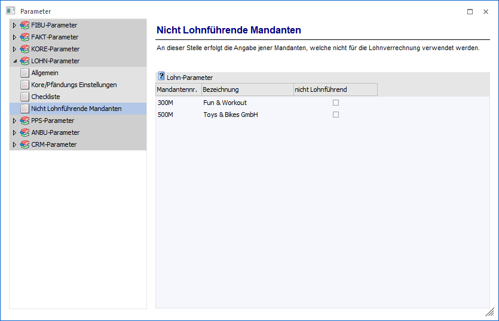

In der Tabelle "Lohn-Parameter" werden alle aktiven Mandanten gemäß "Datenbank Verbindungen" (siehe WinLine ADMIN) mit ihrer Bezeichnung angezeigt. Pro Mandant kann nun definiert werden, ob es sich um einen lohnführenden Mandanten (Standardeinstellung) handelt, oder nicht.
Was ist der Unterschied?
Im WinLine INFO im Menüpunkt
1 SMART
1 Mitarbeiterstamm
steht ein reduzierter Arbeitnehmerstamm zur Verfügung, in welchem Daten für die Mitarbeiter verwaltet werden können. Unter anderem gibt es auch ein Register "Lohnarten", in dem Arbeitnehmer-Konstanten und / oder Lohnarten hinterlegt werden können. Da diese Daten in einem Mandanten, in dem auch die Lohnverrechnung durchgeführt wird, nicht jeder sehen darf, wird dieses Register gesperrt, wenn es sich um einen lohnführenden Mandanten handelt. Für nicht lohnführende Mandanten hingegen - die in der Tabelle extra gekennzeichnet werden müssen - steht dieses Register zur freien Eingabe zur Verfügung. Darüber hinaus können im Mitarbeiterstamm zwar Arbeitnehmer aufgerufen, aber nicht gespeichert werden.
Wenn ein Mandant als "nicht Lohnführend" definiert ist, dann wird die Abrechnungsperiode (die für die Berechnung des Urlaubs relevant ist) aus dem Einstiegsdatum der WinLine ermittelt. Die Abrechnungsperiode kann über das Programm auch nicht verändert werden.